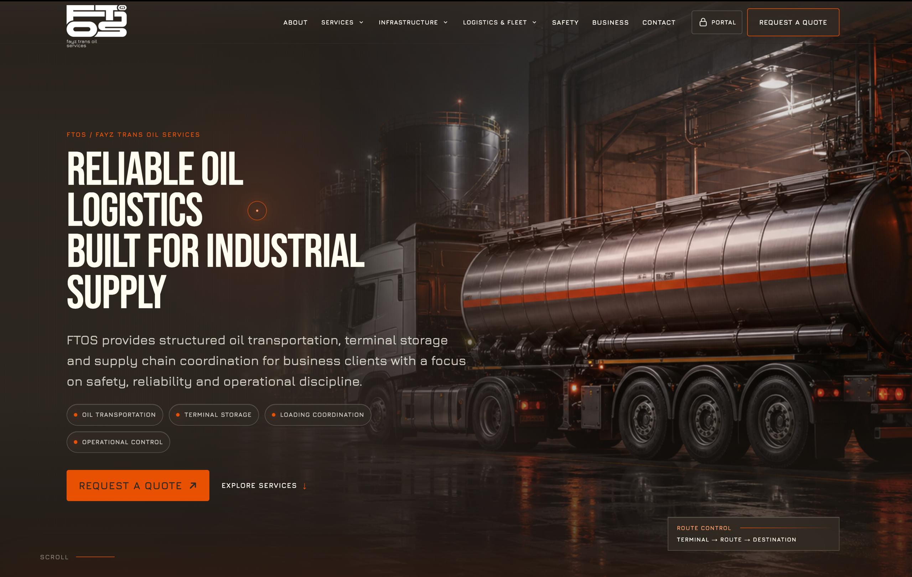

Key processes
Client request intake, service presentation, logistics inquiry routing, operational communication and prepared routing into internal work.
Logistics / Website automation
A logistics website and business automation case focused on turning client requests into structured operational inputs, improving service communication, and making internal response easier to manage.

Client request intake, service presentation, logistics inquiry routing, operational communication and prepared routing into internal work.
Website structure, business process analysis, content logic and automation planning between customer requests and internal operational work.
The company received a clearer digital front office for logistics requests and a more manageable path from inquiry to operational response.
The FTOS project was shaped around a practical logistics need: present services clearly, reduce scattered client communication, and create a cleaner bridge between website inquiries and internal operational response.